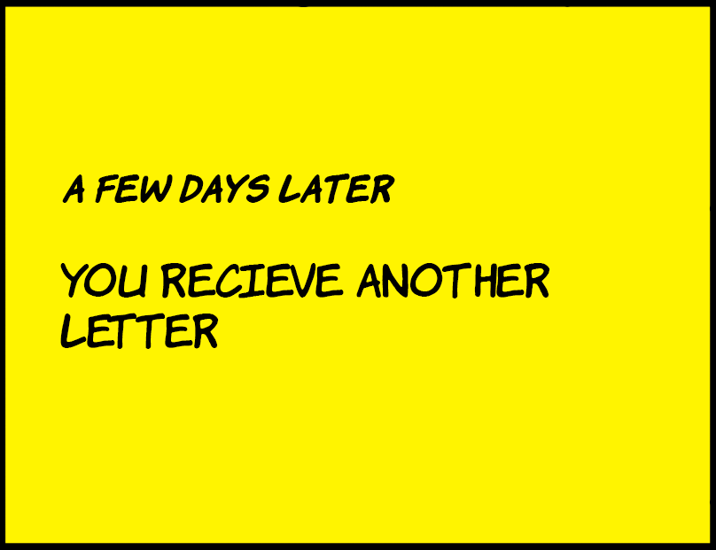

Dear detective
It is me, Miguel Ramos, I am writing you to tell you how the whole thing turned out.
After some search we found that you were correct! It was Bolinhas who commited the murder.
What you might have not expected is that after getting confronted, he simply bronke down and cofessed to everything.
Appearently, he was someone's pet, but had been abandoned out in here. Kinda don't get why he's pretty cute to abandon.
We're still trying to figure out where the owner is, but it's still a bit difficult get a hold of him. At the very least once we find him, he'll either be behind bars for 6 months or pay a 300 euro fine!
Still it's not the cat's fault, but actions like these can bring and foreign animals into an eco-system and make them an envasive species.
And we've been dealing with enough of those, like the mice from before.
Currently we're bringing the cat to a shelter, but I'm thinking of adopting him.
But other then my future aspirations, I'm really glad you helped us out!
Hopefuly you'll be willing to help us out another!
Thank you so much for helping us!
From Miguel Ramos
Retry?